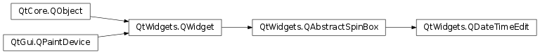

QDateTimeEdit¶
Inherited by: QDateEdit, QTimeEdit
Synopsis¶
Functions¶
- def
calendarPopup() - def
calendarWidget() - def
clearMaximumDate() - def
clearMaximumDateTime() - def
clearMaximumTime() - def
clearMinimumDate() - def
clearMinimumDateTime() - def
clearMinimumTime() - def
currentSection() - def
currentSectionIndex() - def
date() - def
dateTime() - def
displayFormat() - def
displayedSections() - def
maximumDate() - def
maximumDateTime() - def
maximumTime() - def
minimumDate() - def
minimumDateTime() - def
minimumTime() - def
sectionAt(index) - def
sectionCount() - def
sectionText(section) - def
setCalendarPopup(enable) - def
setCalendarWidget(calendarWidget) - def
setCurrentSection(section) - def
setCurrentSectionIndex(index) - def
setDateRange(min, max) - def
setDateTimeRange(min, max) - def
setDisplayFormat(format) - def
setMaximumDate(max) - def
setMaximumDateTime(dt) - def
setMaximumTime(max) - def
setMinimumDate(min) - def
setMinimumDateTime(dt) - def
setMinimumTime(min) - def
setSelectedSection(section) - def
setTimeRange(min, max) - def
setTimeSpec(spec) - def
time() - def
timeSpec()
Virtual functions¶
- def
dateTimeFromText(text) - def
textFromDateTime(dt)
Slots¶
- def
setDate(date) - def
setDateTime(dateTime) - def
setTime(time)
Signals¶
- def
dateChanged(date) - def
dateTimeChanged(dateTime) - def
timeChanged(time)
Detailed Description¶
The
PySide2.QtWidgets.QDateTimeEditclass provides a widget for editing dates and times.
PySide2.QtWidgets.QDateTimeEditallows the user to edit dates by using the keyboard or the arrow keys to increase and decrease date and time values. The arrow keys can be used to move from section to section within thePySide2.QtWidgets.QDateTimeEditbox. Dates and times appear in accordance with the format set; seePySide2.QtWidgets.QDateTimeEdit.setDisplayFormat().dateEdit = QDateTimeEdit(QDate.currentDate()) dateEdit.setMinimumDate(QDate.currentDate().addDays(-365)) dateEdit.setMaximumDate(QDate.currentDate().addDays(365)) dateEdit.setDisplayFormat("yyyy.MM.dd")Here we’ve created a new
PySide2.QtWidgets.QDateTimeEditobject initialized with today’s date, and restricted the valid date range to today plus or minus 365 days. We’ve set the order to month, day, year.The minimum value for
PySide2.QtWidgets.QDateTimeEditis 14 September 1752. You can change this by callingPySide2.QtWidgets.QDateTimeEdit.setMinimumDate(), taking into account that the minimum value forPySide2.QtCore.QDateis 2 January 4713BC.Other useful functions are
PySide2.QtWidgets.QDateTimeEdit.setMaximumDate(),PySide2.QtWidgets.QDateTimeEdit.setMinimumTime()andPySide2.QtWidgets.QDateTimeEdit.setMaximumTime().
Using a Pop-up Calendar Widget¶
PySide2.QtWidgets.QDateTimeEditcan be configured to allow aPySide2.QtWidgets.QCalendarWidgetto be used to select dates. This is enabled by setting thePySide2.QtWidgets.QDateTimeEdit.calendarPopup()property. Additionally, you can supply a custom calendar widget for use as the calendar pop-up by calling thePySide2.QtWidgets.QDateTimeEdit.setCalendarWidget()function. The existing calendar widget can be retrieved withPySide2.QtWidgets.QDateTimeEdit.calendarWidget().
-
class
PySide2.QtWidgets.QDateTimeEdit([parent=nullptr])¶ -
class
PySide2.QtWidgets.QDateTimeEdit(d[, parent=nullptr]) -
class
PySide2.QtWidgets.QDateTimeEdit(dt[, parent=nullptr]) -
class
PySide2.QtWidgets.QDateTimeEdit(t[, parent=nullptr]) -
class
PySide2.QtWidgets.QDateTimeEdit(val, parserType[, parent=nullptr]) Parameters: - parserType –
PySide2.QtCore.QVariant::Type - val – object
- t –
PySide2.QtCore.QTime - dt –
PySide2.QtCore.QDateTime - parent –
PySide2.QtWidgets.QWidget - d –
PySide2.QtCore.QDate
Constructs an empty date time editor with a
parent.Constructs an empty date time editor with a
parent. The value is set todate.Constructs an empty date time editor with a
parent. The value is set todatetime.Constructs an empty date time editor with a
parent. The value is set totime.- parserType –
-
PySide2.QtWidgets.QDateTimeEdit.Section¶ Constant Description QDateTimeEdit.NoSection QDateTimeEdit.AmPmSection QDateTimeEdit.MSecSection QDateTimeEdit.SecondSection QDateTimeEdit.MinuteSection QDateTimeEdit.HourSection QDateTimeEdit.DaySection QDateTimeEdit.MonthSection QDateTimeEdit.YearSection
-
PySide2.QtWidgets.QDateTimeEdit.calendarPopup()¶ Return type: PySide2.QtCore.bool
-
PySide2.QtWidgets.QDateTimeEdit.calendarWidget()¶ Return type: PySide2.QtWidgets.QCalendarWidgetReturns the calendar widget for the editor if
PySide2.QtWidgets.QDateTimeEdit.calendarPopup()is set to true and ( sections() &DateSections_Mask) != 0.This function creates and returns a calendar widget if none has been set.
-
PySide2.QtWidgets.QDateTimeEdit.clearMaximumDate()¶
-
PySide2.QtWidgets.QDateTimeEdit.clearMaximumDateTime()¶
-
PySide2.QtWidgets.QDateTimeEdit.clearMaximumTime()¶
-
PySide2.QtWidgets.QDateTimeEdit.clearMinimumDate()¶
-
PySide2.QtWidgets.QDateTimeEdit.clearMinimumDateTime()¶
-
PySide2.QtWidgets.QDateTimeEdit.clearMinimumTime()¶
-
PySide2.QtWidgets.QDateTimeEdit.currentSection()¶ Return type: PySide2.QtWidgets.QDateTimeEdit.Section
-
PySide2.QtWidgets.QDateTimeEdit.currentSectionIndex()¶ Return type: PySide2.QtCore.int
-
PySide2.QtWidgets.QDateTimeEdit.date()¶ Return type: PySide2.QtCore.QDateReturns the date of the date time edit.
-
PySide2.QtWidgets.QDateTimeEdit.dateChanged(date)¶ Parameters: date – PySide2.QtCore.QDate
-
PySide2.QtWidgets.QDateTimeEdit.dateTime()¶ Return type: PySide2.QtCore.QDateTime
-
PySide2.QtWidgets.QDateTimeEdit.dateTimeChanged(dateTime)¶ Parameters: dateTime – PySide2.QtCore.QDateTime
-
PySide2.QtWidgets.QDateTimeEdit.dateTimeFromText(text)¶ Parameters: text – unicode Return type: PySide2.QtCore.QDateTimeReturns an appropriate datetime for the given
text.This virtual function is used by the datetime edit whenever it needs to interpret text entered by the user as a value.
See also
PySide2.QtWidgets.QDateTimeEdit.textFromDateTime()PySide2.QtWidgets.QDateTimeEdit.validate()
-
PySide2.QtWidgets.QDateTimeEdit.displayFormat()¶ Return type: unicode
-
PySide2.QtWidgets.QDateTimeEdit.displayedSections()¶ Return type: PySide2.QtWidgets.QDateTimeEdit.Sections
-
PySide2.QtWidgets.QDateTimeEdit.maximumDate()¶ Return type: PySide2.QtCore.QDate
-
PySide2.QtWidgets.QDateTimeEdit.maximumDateTime()¶ Return type: PySide2.QtCore.QDateTime
-
PySide2.QtWidgets.QDateTimeEdit.maximumTime()¶ Return type: PySide2.QtCore.QTime
-
PySide2.QtWidgets.QDateTimeEdit.minimumDate()¶ Return type: PySide2.QtCore.QDate
-
PySide2.QtWidgets.QDateTimeEdit.minimumDateTime()¶ Return type: PySide2.QtCore.QDateTime
-
PySide2.QtWidgets.QDateTimeEdit.minimumTime()¶ Return type: PySide2.QtCore.QTime
-
PySide2.QtWidgets.QDateTimeEdit.sectionAt(index)¶ Parameters: index – PySide2.QtCore.intReturn type: PySide2.QtWidgets.QDateTimeEdit.SectionReturns the Section at
index.If the format is ‘yyyy/MM/dd’, (0) returns
YearSection, (1) returnsMonthSection, and (2) returnsYearSection,
-
PySide2.QtWidgets.QDateTimeEdit.sectionCount()¶ Return type: PySide2.QtCore.int
-
PySide2.QtWidgets.QDateTimeEdit.sectionText(section)¶ Parameters: section – PySide2.QtWidgets.QDateTimeEdit.SectionReturn type: unicode Returns the text from the given
section.
-
PySide2.QtWidgets.QDateTimeEdit.setCalendarPopup(enable)¶ Parameters: enable – PySide2.QtCore.bool
-
PySide2.QtWidgets.QDateTimeEdit.setCalendarWidget(calendarWidget)¶ Parameters: calendarWidget – PySide2.QtWidgets.QCalendarWidgetSets the given
calendarWidgetas the widget to be used for the calendar pop-up. The editor does not automatically take ownership of the calendar widget.Note
PySide2.QtWidgets.QDateTimeEdit.calendarPopup()must be set to true before setting the calendar widget.
-
PySide2.QtWidgets.QDateTimeEdit.setCurrentSection(section)¶ Parameters: section – PySide2.QtWidgets.QDateTimeEdit.Section
-
PySide2.QtWidgets.QDateTimeEdit.setCurrentSectionIndex(index)¶ Parameters: index – PySide2.QtCore.int
-
PySide2.QtWidgets.QDateTimeEdit.setDate(date)¶ Parameters: date – PySide2.QtCore.QDate
-
PySide2.QtWidgets.QDateTimeEdit.setDateRange(min, max)¶ Parameters: - min –
PySide2.QtCore.QDate - max –
PySide2.QtCore.QDate
Convenience function to set minimum and maximum date with one function call.
setDateRange(min, max)
is analogous to:
setMinimumDate(min) setMaximumDate(max)
If either
minormaxare not valid, this function does nothing.See also
PySide2.QtWidgets.QDateTimeEdit.setMinimumDate()PySide2.QtWidgets.QDateTimeEdit.maximumDate()PySide2.QtWidgets.QDateTimeEdit.setMaximumDate()PySide2.QtWidgets.QDateTimeEdit.clearMinimumDate()PySide2.QtWidgets.QDateTimeEdit.setMinimumTime()PySide2.QtWidgets.QDateTimeEdit.maximumTime()PySide2.QtWidgets.QDateTimeEdit.setMaximumTime()PySide2.QtWidgets.QDateTimeEdit.clearMinimumTime()QDate.isValid()- min –
-
PySide2.QtWidgets.QDateTimeEdit.setDateTime(dateTime)¶ Parameters: dateTime – PySide2.QtCore.QDateTime
-
PySide2.QtWidgets.QDateTimeEdit.setDateTimeRange(min, max)¶ Parameters: - min –
PySide2.QtCore.QDateTime - max –
PySide2.QtCore.QDateTime
Convenience function to set minimum and maximum date time with one function call.
setDateTimeRange(min, max)
is analogous to:
setMinimumDateTime(min) setMaximumDateTime(max)
If either
minormaxare not valid, this function does nothing.See also
PySide2.QtWidgets.QDateTimeEdit.setMinimumDate()PySide2.QtWidgets.QDateTimeEdit.maximumDate()PySide2.QtWidgets.QDateTimeEdit.setMaximumDate()PySide2.QtWidgets.QDateTimeEdit.clearMinimumDate()PySide2.QtWidgets.QDateTimeEdit.setMinimumTime()PySide2.QtWidgets.QDateTimeEdit.maximumTime()PySide2.QtWidgets.QDateTimeEdit.setMaximumTime()PySide2.QtWidgets.QDateTimeEdit.clearMinimumTime()QDateTime.isValid()- min –
-
PySide2.QtWidgets.QDateTimeEdit.setDisplayFormat(format)¶ Parameters: format – unicode
-
PySide2.QtWidgets.QDateTimeEdit.setMaximumDate(max)¶ Parameters: max – PySide2.QtCore.QDate
-
PySide2.QtWidgets.QDateTimeEdit.setMaximumDateTime(dt)¶ Parameters: dt – PySide2.QtCore.QDateTime
-
PySide2.QtWidgets.QDateTimeEdit.setMaximumTime(max)¶ Parameters: max – PySide2.QtCore.QTime
-
PySide2.QtWidgets.QDateTimeEdit.setMinimumDate(min)¶ Parameters: min – PySide2.QtCore.QDate
-
PySide2.QtWidgets.QDateTimeEdit.setMinimumDateTime(dt)¶ Parameters: dt – PySide2.QtCore.QDateTime
-
PySide2.QtWidgets.QDateTimeEdit.setMinimumTime(min)¶ Parameters: min – PySide2.QtCore.QTime
-
PySide2.QtWidgets.QDateTimeEdit.setSelectedSection(section)¶ Parameters: section – PySide2.QtWidgets.QDateTimeEdit.SectionSelects
section. Ifsectiondoesn’t exist in the currently displayed sections, this function does nothing. IfsectionisNoSection, this function will unselect all text in the editor. Otherwise, this function will move the cursor and the current section to the selected section.
-
PySide2.QtWidgets.QDateTimeEdit.setTime(time)¶ Parameters: time – PySide2.QtCore.QTime
-
PySide2.QtWidgets.QDateTimeEdit.setTimeRange(min, max)¶ Parameters: - min –
PySide2.QtCore.QTime - max –
PySide2.QtCore.QTime
Convenience function to set minimum and maximum time with one function call.
setTimeRange(min, max)
is analogous to:
setMinimumTime(min) setMaximumTime(max)
If either
minormaxare not valid, this function does nothing.See also
PySide2.QtWidgets.QDateTimeEdit.setMinimumDate()PySide2.QtWidgets.QDateTimeEdit.maximumDate()PySide2.QtWidgets.QDateTimeEdit.setMaximumDate()PySide2.QtWidgets.QDateTimeEdit.clearMinimumDate()PySide2.QtWidgets.QDateTimeEdit.setMinimumTime()PySide2.QtWidgets.QDateTimeEdit.maximumTime()PySide2.QtWidgets.QDateTimeEdit.setMaximumTime()PySide2.QtWidgets.QDateTimeEdit.clearMinimumTime()QTime.isValid()- min –
-
PySide2.QtWidgets.QDateTimeEdit.setTimeSpec(spec)¶ Parameters: spec – PySide2.QtCore.Qt.TimeSpec
-
PySide2.QtWidgets.QDateTimeEdit.textFromDateTime(dt)¶ Parameters: dt – PySide2.QtCore.QDateTimeReturn type: unicode This virtual function is used by the date time edit whenever it needs to display
dateTime.If you reimplement this, you may also need to reimplement
PySide2.QtWidgets.QDateTimeEdit.validate().See also
PySide2.QtWidgets.QDateTimeEdit.dateTimeFromText()PySide2.QtWidgets.QDateTimeEdit.validate()
-
PySide2.QtWidgets.QDateTimeEdit.time()¶ Return type: PySide2.QtCore.QTimeReturns the time of the date time edit.
-
PySide2.QtWidgets.QDateTimeEdit.timeChanged(time)¶ Parameters: time – PySide2.QtCore.QTime
-
PySide2.QtWidgets.QDateTimeEdit.timeSpec()¶ Return type: PySide2.QtCore.Qt.TimeSpec
© 2018 The Qt Company Ltd. Documentation contributions included herein are the copyrights of their respective owners. The documentation provided herein is licensed under the terms of the GNU Free Documentation License version 1.3 as published by the Free Software Foundation. Qt and respective logos are trademarks of The Qt Company Ltd. in Finland and/or other countries worldwide. All other trademarks are property of their respective owners.